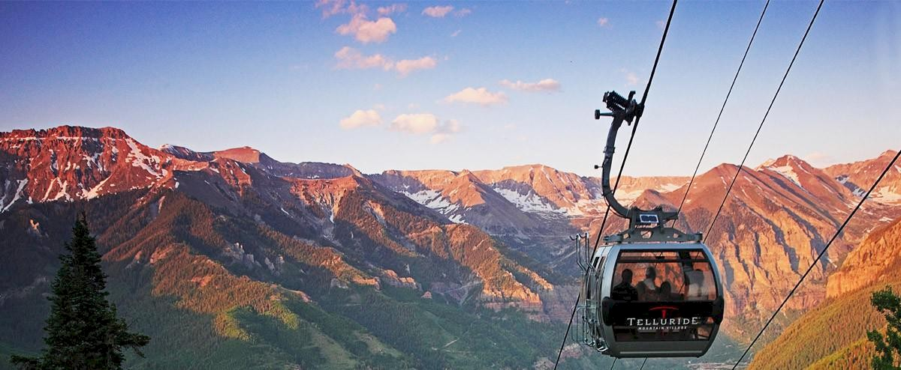

OUR DESTINATIO
Towns. One Amazing Experience.
It is a place of legend, nestled at the end of a lush canyon and surrounded by some of
Colorado’s most rugged peaks. Nowhere else in the country, or perhaps the world, does
such a place exist. To some, we are known for incredible alpine skiing. To others, summers
full of cultural events and endless outdoor activities. By everyone, we are embraced for our
authentic mountain character, unpretentious attitude, and celebration of four seasons of
adventure in the most beautiful spot of the Rocky Mountain high country.
Telluride
Telluride is tucked into a box canyon surrounded by 13,000 and 14,000-foot peaks. The town of
Telluride is just eight blocks wide and twelve blocks long. Because its significant role in the history of
the American West, the core area of Telluride was designated a National Historic Landmark District inz
1964. This listing is the highest level of historic status available from the United States Secretary of the
Interior. These sites are so special that they are eligible for consideration to become national parks. With
the town's colorful Victorian-era homes, clapboard storefronts, boutiques, art galleries, gourmet
restaurants, historic buildings and more, Telluride is a delight to explore. Our citizens are committed to
preserving Telluride's historically significant architecture, open space, traditional design elements and,
most of all, Telluride’s small-town mountain lifestyle.
Mountain Village
Mountain Village is perched above the valley floor at 9,500 feet, providing
access to the Telluride Ski Resort and Uncompahgre National Forest. The Town of Mountain Village was founded
in 1987 and includes approximately 2,100 acres of rolling aspen and spruce-covered mountainsides. A vision of
alpine elegance, this European-style village tempts guests with the best of everything in the Telluride region.
Coming into its own as a leading community, Mountain Village embraces green practices and sustainable growth in
its everyday operations.
The two towns are connected by a free, scenic gondola—the only transportation system of its kind in North America. The 13-minute ride is a daily event for residents and visitors alike. Exploring both Telluride and Mountain Village is easy with the convenience of the gondola.
The two towns are connected by a free, scenic gondola—the only transportation system of its kind in North America. The 13-minute ride is a daily event for residents and visitors alike. Exploring both Telluride and Mountain Village is easy with the convenience of the gondola.
The Gondola
The towns of Telluride and Mountain Village are linked by a spectacular, 13-minute ride on a free gondola—the first and only free public transportation system of its kind in the United States. This popular scenic attraction provides access to hiking and biking trails in the summer and the ski slopes in the winter. Passengers can load the gondola in either Mountain Village or Telluride and ride to the midway point (Station St. Sophia from which hiking, biking and ski trails are accessed) and then continue on to the other side.
Once you discover this unique mountain mode of travel, you'll find a front row seat to view Mother Nature from 10,500 feet. The ride from Telluride to Station San Sophia has an elevation change of 1,750 feet; the ride from Station San Sophia to Mountain Village has a 960-foot conversion. The gondola runs daily from 6:30 a.m. to midnight during summer and winter. On select event dates, extended hours may be in place. The gondola closes for a short duration in the late spring and fall for maintenance and other operational needs.
The gondola has three primary stations where you can board and unload:
In the winter, ski and snowboard racks are mounted on the exterior of cabins, and gondola attendants help load equipment. In the summer, bike racks are mounted on the exterior of the cabins, and gondola attendants help load bikes.
Telluride Central Reservations can help package your air, lodging and more to get the best possible rates. Just call us. 888.605.2578. Check out current Lodging Specials and Packages.
Once you discover this unique mountain mode of travel, you'll find a front row seat to view Mother Nature from 10,500 feet. The ride from Telluride to Station San Sophia has an elevation change of 1,750 feet; the ride from Station San Sophia to Mountain Village has a 960-foot conversion. The gondola runs daily from 6:30 a.m. to midnight during summer and winter. On select event dates, extended hours may be in place. The gondola closes for a short duration in the late spring and fall for maintenance and other operational needs.
The gondola has three primary stations where you can board and unload:
- Station Telluride (Oak Street) – access in Telluride
- Station St. Sophia (mid-mountain stop) – access to Allred’s Restaurant & Bar, The Ridge Club and ski resort trails and runs
- Station Mountain Village – access in Mountain Village
- Just across from Station Mountain Village, a shorter gondola stretch connects to Station Village Parking, where the free parking garage, Town Hall and the Mountain Market are located.
In the winter, ski and snowboard racks are mounted on the exterior of cabins, and gondola attendants help load equipment. In the summer, bike racks are mounted on the exterior of the cabins, and gondola attendants help load bikes.
Telluride Central Reservations can help package your air, lodging and more to get the best possible rates. Just call us. 888.605.2578. Check out current Lodging Specials and Packages.
Quick Facts
Hours: The gondola operates daily from 6:30 a.m. to midnight (with extended hours until 2 a.m. on certain weekends) during the winter (November 22-April 5, 2020) and summer (May 21-October 18, 2020) seasons.
Fast: Each cabin travels at 11 mph, and the ride from Telluride to Mountain Village takes 13 minutes.
Free: With the support of a number of community financial sources, the gondola is free to ride.
Green: Electricity used to operate the gondola comes from wind power purchased from San Miguel Power Association.
Fast: Each cabin travels at 11 mph, and the ride from Telluride to Mountain Village takes 13 minutes.
Free: With the support of a number of community financial sources, the gondola is free to ride.
Green: Electricity used to operate the gondola comes from wind power purchased from San Miguel Power Association.
More Gondola Information